MCMC¶
- class MCMC(*args)¶
Monte-Carlo Markov Chain.
- Available constructor:
MCMC(prior, conditional, observations, initialState)
MCMC(prior, conditional, model, parameters, observations, initialState)
- Parameters
- prior
Distribution Prior distribution of the parameters of the underlying Bayesian statistical model.
- conditional
Distribution Required distribution to define the likelihood of the underlying Bayesian statistical model.
- model
Function Function required to define the likelihood.
- observations2-d sequence of float
Observations required to define the likelihood.
- initialStatesequence of float
Initial state of the Monte-Carlo Markov chain on which the Sampler is based.
- parameters2-d sequence of float
Parameters of the model to be fixed.
- prior
Notes
MCMC provides a implementation of the concept of sampler, using a Monte-Carlo Markov Chain (MCMC) algorithm starting from initialState. More precisely, let 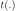 be the PDF of its target distribution and 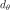 its dimension, 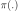 be the PDF of the prior distribution,
 be the PDF of the conditional distribution
when its parameters are set to 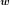, 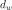 be the number of
scalar parameters of conditional distribution (which corresponds to the
dimension of the above ),
be the PDF of the conditional distribution
when its parameters are set to 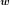, 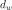 be the number of
scalar parameters of conditional distribution (which corresponds to the
dimension of the above ),  be the function
corresponding to model and 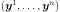 be the
sample observations (of size
be the function
corresponding to model and 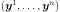 be the
sample observations (of size  ):
):In the first usage, it creates a sampler based on a MCMC algorithm whose target distribution is defined by:
In the second usage, it creates a sampler based on a MCMC algorithm whose target distribution is defined by:
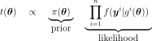
where the 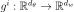 (
 ) are such that:
) are such that: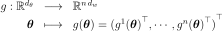
In fact, the first usage is a particular case of the second.
The MCMC method implemented is the Random Walk Metropolis-Hastings algorithm. A sample can be generated only through the MCMC’s derived class:
RandomWalkMetropolisHastings.Methods
computeLogLikelihood(currentState)Compute the logarithm of the likelihood w.r.t.
Accessor to the antecedent RandomVector in case of a composite RandomVector.
Get the length of the burn-in period.
Accessor to the object's name.
Get the conditional distribution.
Accessor to the covariance of the RandomVector.
Accessor to the description of the RandomVector.
Accessor to the dimension of the RandomVector.
Accessor to the distribution of the RandomVector.
Accessor to the domain of the Event.
Accessor to the Function in case of a composite RandomVector.
Get the history storage.
getId()Accessor to the object's id.
getMarginal(*args)Get the random vector corresponding to the 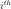 marginal component(s).
getMean()Accessor to the mean of the RandomVector.
getModel()Get the model.
getName()Accessor to the object's name.
Get the components to be always accepted.
Get the observations.
Accessor to the comparaison operator of the Event.
Accessor to the parameter of the distribution.
Accessor to the parameter description of the distribution.
Get the parameters.
getPrior()Get the prior distribution.
Get the stochastic process.
Compute one realization of the RandomVector.
getSample(size)Compute realizations of the RandomVector.
Accessor to the object's shadowed id.
Get the thinning parameter.
Accessor to the threshold of the Event.
Tell whether the verbose mode is activated or not.
Accessor to the object's visibility state.
hasName()Test if the object is named.
Test if the object has a distinguishable name.
Accessor to know if the RandomVector is a composite one.
isEvent()Whether the random vector is an event.
setBurnIn(burnIn)Set the length of the burn-in period.
setDescription(description)Accessor to the description of the RandomVector.
setHistory(strategy)Set the history storage.
setName(name)Accessor to the object's name.
setNonRejectedComponents(nonRejectedComponents)Set the components to be always accepted.
setObservations(observations)Set the observations.
setParameter(parameters)Accessor to the parameter of the distribution.
setParameters(parameters)Set the parameters.
setPrior(prior)Set the prior distribution.
setShadowedId(id)Accessor to the object's shadowed id.
setThinning(thinning)Set the thinning parameter.
setVerbose(verbose)Set the verbose mode.
setVisibility(visible)Accessor to the object's visibility state.
- __init__(*args)¶
- computeLogLikelihood(currentState)¶
Compute the logarithm of the likelihood w.r.t. observations.
- Parameters
- currentStatesequence of float
Current state.
- Returns
- logLikelihoodfloat
Logarithm of the likelihood w.r.t. observations .
- getAntecedent()¶
Accessor to the antecedent RandomVector in case of a composite RandomVector.
- Returns
- antecedent
RandomVector Antecedent RandomVector
 in case of a
in case of a
CompositeRandomVectorsuch as: .
.
- antecedent
- getBurnIn()¶
Get the length of the burn-in period.
- Returns
- lenghtint
Length of the burn-in period, that is the number of first iterates of the MCMC chain which will be thrown away when generating the sample.
- getClassName()¶
Accessor to the object’s name.
- Returns
- class_namestr
The object class name (object.__class__.__name__).
- getConditional()¶
Get the conditional distribution.
- Returns
- conditional
Distribution Distribution taken into account in the definition of the likelihood, whose PDF with parameters corresponds to
in the equations of the
target distribution’s PDF.
- conditional
- getCovariance()¶
Accessor to the covariance of the RandomVector.
- Returns
- covariance
CovarianceMatrix Covariance of the considered
UsualRandomVector.
- covariance
Examples
>>> import openturns as ot >>> distribution = ot.Normal([0.0, 0.5], [1.0, 1.5], ot.CorrelationMatrix(2)) >>> randomVector = ot.RandomVector(distribution) >>> ot.RandomGenerator.SetSeed(0) >>> print(randomVector.getCovariance()) [[ 1 0 ] [ 0 2.25 ]]
- getDescription()¶
Accessor to the description of the RandomVector.
- Returns
- description
Description Describes the components of the RandomVector.
- description
- getDimension()¶
Accessor to the dimension of the RandomVector.
- Returns
- dimensionpositive int
Dimension of the RandomVector.
- getDistribution()¶
Accessor to the distribution of the RandomVector.
- Returns
- distribution
Distribution Distribution of the considered
UsualRandomVector.
- distribution
Examples
>>> import openturns as ot >>> distribution = ot.Normal([0.0, 0.0], [1.0, 1.0], ot.CorrelationMatrix(2)) >>> randomVector = ot.RandomVector(distribution) >>> ot.RandomGenerator.SetSeed(0) >>> print(randomVector.getDistribution()) Normal(mu = [0,0], sigma = [1,1], R = [[ 1 0 ] [ 0 1 ]])
- getDomain()¶
Accessor to the domain of the Event.
- Returns
- domain
Domain Describes the domain of an event.
- domain
- getFunction()¶
Accessor to the Function in case of a composite RandomVector.
- Returns
- function
Function Function used to define a
CompositeRandomVectoras the image through this function of the antecedent:
.
- function
- getHistory()¶
Get the history storage.
- Returns
- history
HistoryStrategy Used to record the chain.
- history
- getId()¶
Accessor to the object’s id.
- Returns
- idint
Internal unique identifier.
- getMarginal(*args)¶
Get the random vector corresponding to the marginal component(s).
- Parameters
- iint or list of ints,

Indicates the component(s) concerned.
 is the dimension of the
RandomVector.
is the dimension of the
RandomVector.
- iint or list of ints,
- Returns
- vector
RandomVector RandomVector restricted to the concerned components.
- vector
Notes
Let’s note 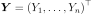 a random vector and
![I \in [1,n]](../../_images/math/51c159570d2ffbdc697d35ca4247b617daadb12c.svg) a set of indices. If
a set of indices. If  is a
is a
UsualRandomVector, the subvector is defined by . If is a
. If is a
CompositeRandomVector, defined by with  ,
,
 some scalar functions, the subvector is
some scalar functions, the subvector is
 .
.Examples
>>> import openturns as ot >>> distribution = ot.Normal([0.0, 0.0], [1.0, 1.0], ot.CorrelationMatrix(2)) >>> randomVector = ot.RandomVector(distribution) >>> ot.RandomGenerator.SetSeed(0) >>> print(randomVector.getMarginal(1).getRealization()) [0.608202] >>> print(randomVector.getMarginal(1).getDistribution()) Normal(mu = 0, sigma = 1)
- getMean()¶
Accessor to the mean of the RandomVector.
- Returns
- mean
Point Mean of the considered
UsualRandomVector.
- mean
Examples
>>> import openturns as ot >>> distribution = ot.Normal([0.0, 0.5], [1.0, 1.5], ot.CorrelationMatrix(2)) >>> randomVector = ot.RandomVector(distribution) >>> ot.RandomGenerator.SetSeed(0) >>> print(randomVector.getMean()) [0,0.5]
- getModel()¶
Get the model.
- Returns
- model
Function Model take into account in the definition of the likelihood, which corresponds to
 , that is the functions
, that is the functions  (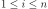) in the equation of the
target distribution’s PDF.
(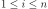) in the equation of the
target distribution’s PDF.
- model
- getName()¶
Accessor to the object’s name.
- Returns
- namestr
The name of the object.
- getNonRejectedComponents()¶
Get the components to be always accepted.
- Returns
- nonRejectedComponents
Indices The indices of the components that are not tuned, and sampled according to the prior distribution in order to take into account the intrinsic uncertainty, as opposed to the epistemic uncertainty corresponding to the tuned variables.
- nonRejectedComponents
- getObservations()¶
Get the observations.
- Returns
- observations
Sample Sample taken into account in the definition of the likelihood, which corresponds to the
-tuple of the 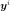
() in equations of the
target distribution’s PDF.
- observations
- getOperator()¶
Accessor to the comparaison operator of the Event.
- Returns
- operator
ComparisonOperator Comparaison operator used to define the
RandomVector.
- operator
- getParameter()¶
Accessor to the parameter of the distribution.
- Returns
- parameter
Point Parameter values.
- parameter
- getParameterDescription()¶
Accessor to the parameter description of the distribution.
- Returns
- description
Description Parameter names.
- description
- getParameters()¶
Get the parameters.
- Returns
- parameters
Point Fixed parameters of the model
required to define the likelihood.
- parameters
- getPrior()¶
Get the prior distribution.
- Returns
- prior
Distribution The prior distribution of the parameter of the underlying Bayesian statistical model, whose PDF corresponds to 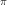 in the equations of the target distribution’s PDF.
- prior
- getProcess()¶
Get the stochastic process.
- Returns
- process
Process Stochastic process used to define the
RandomVector.
- process
- getRealization()¶
Compute one realization of the RandomVector.
- Returns
- aRealization
Point Sequence of values randomly determined from the RandomVector definition. In the case of an event: one realization of the event (considered as a Bernoulli variable) which is a boolean value (1 for the realization of the event and 0 else).
- aRealization
See also
Examples
>>> import openturns as ot >>> distribution = ot.Normal([0.0, 0.0], [1.0, 1.0], ot.CorrelationMatrix(2)) >>> randomVector = ot.RandomVector(distribution) >>> ot.RandomGenerator.SetSeed(0) >>> print(randomVector.getRealization()) [0.608202,-1.26617] >>> print(randomVector.getRealization()) [-0.438266,1.20548]
- getSample(size)¶
Compute realizations of the RandomVector.
- Parameters
- nint,

Number of realizations needed.
- nint,
- Returns
- realizations
Sample n sequences of values randomly determined from the RandomVector definition. In the case of an event: n realizations of the event (considered as a Bernoulli variable) which are boolean values (1 for the realization of the event and 0 else).
- realizations
See also
Examples
>>> import openturns as ot >>> distribution = ot.Normal([0.0, 0.0], [1.0, 1.0], ot.CorrelationMatrix(2)) >>> randomVector = ot.RandomVector(distribution) >>> ot.RandomGenerator.SetSeed(0) >>> print(randomVector.getSample(3)) [ X0 X1 ] 0 : [ 0.608202 -1.26617 ] 1 : [ -0.438266 1.20548 ] 2 : [ -2.18139 0.350042 ]
- getShadowedId()¶
Accessor to the object’s shadowed id.
- Returns
- idint
Internal unique identifier.
- getThinning()¶
Get the thinning parameter.
- Returns
- thinningint
Thinning parameter: storing only every
 point after the
burn-in period.
point after the
burn-in period.
Notes
When generating a sample of size 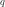, the number of MCMC iterations performed is
 where 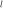 is the burn-in period length
and
where 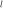 is the burn-in period length
and  the thinning parameter.
the thinning parameter.
- getThreshold()¶
Accessor to the threshold of the Event.
- Returns
- thresholdfloat
Threshold of the
RandomVector.
- getVerbose()¶
Tell whether the verbose mode is activated or not.
- Returns
- isVerbosebool
The verbose mode is activated if it is True, desactivated otherwise.
- getVisibility()¶
Accessor to the object’s visibility state.
- Returns
- visiblebool
Visibility flag.
- hasName()¶
Test if the object is named.
- Returns
- hasNamebool
True if the name is not empty.
- hasVisibleName()¶
Test if the object has a distinguishable name.
- Returns
- hasVisibleNamebool
True if the name is not empty and not the default one.
- isComposite()¶
Accessor to know if the RandomVector is a composite one.
- Returns
- isCompositebool
Indicates if the RandomVector is of type Composite or not.
- isEvent()¶
Whether the random vector is an event.
- Returns
- isEventbool
Whether it takes it values in {0, 1}.
- setBurnIn(burnIn)¶
Set the length of the burn-in period.
- Parameters
- lenghtint
Length of the burn-in period, that is the number of first iterates of the MCMC chain which will be thrown away when generating the sample.
- setDescription(description)¶
Accessor to the description of the RandomVector.
- Parameters
- descriptionstr or sequence of str
Describes the components of the RandomVector.
- setHistory(strategy)¶
Set the history storage.
- Parameters
- history
HistoryStrategy Used to record the chain.
- history
- setName(name)¶
Accessor to the object’s name.
- Parameters
- namestr
The name of the object.
- setNonRejectedComponents(nonRejectedComponents)¶
Set the components to be always accepted.
- Parameters
- nonRejectedComponentssequence of int
The indices of the components that are not tuned, and sampled according to the prior distribution in order to take into account the intrinsic uncertainty, as opposed to the epistemic uncertainty corresponding to the tuned variables.
- setObservations(observations)¶
Set the observations.
- Parameters
- observations2-d sequence of float
Sample taken into account in the definition of the likelihood, which corresponds to the
-tuple of the
() in the equations of the
target distribution’s PDF.
- setParameter(parameters)¶
Accessor to the parameter of the distribution.
- Parameters
- parametersequence of float
Parameter values.
- setParameters(parameters)¶
Set the parameters.
- Parameters
- parameterssequence of float
Fixed parameters of the model
required to define the likelihood.
- setPrior(prior)¶
Set the prior distribution.
- Parameters
- prior
Distribution The prior distribution of the parameter of the underlying Bayesian statistical model, whose PDF corresponds to in the equations of the target distribution’s PDF.
- prior
- setShadowedId(id)¶
Accessor to the object’s shadowed id.
- Parameters
- idint
Internal unique identifier.
- setThinning(thinning)¶
Set the thinning parameter.
- Parameters
- thinningint,

Thinning parameter: storing only every
point after the
burn-in period.
- thinningint,
Notes
When generating a sample of size , the number of MCMC iterations performed is
where is the burn-in period length
and the thinning parameter.
- setVerbose(verbose)¶
Set the verbose mode.
- Parameters
- isVerbosebool
The verbose mode is activated if it is True, desactivated otherwise.
- setVisibility(visible)¶
Accessor to the object’s visibility state.
- Parameters
- visiblebool
Visibility flag.